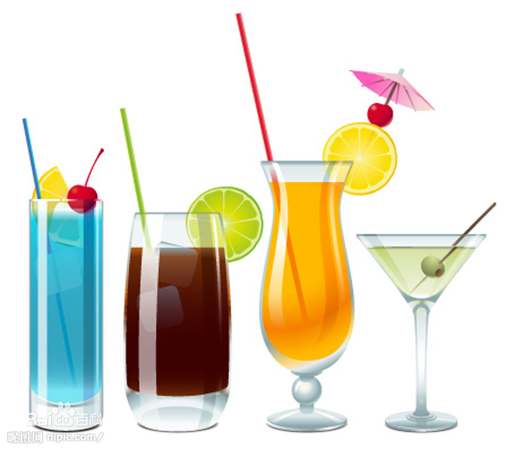

饮料
饮料是指以水为基本原料，由不同的配方和制造工艺生产出来，供人或牲畜直接饮用的液体食品。饮料除提供水分外，由于在不同品种的饮料中含有不等量的糖、酸、乳、钠、脂肪、能量以及各种氨基酸、维生素、无机盐等营养成分，因此有一定的营养。一般分类
饮料一般可分为含酒精饮料和无酒精饮料，无酒精饮料又称软饮料。酒精饮料系指供人们饮用且乙醇(酒精)含量在百分之0.5—65(v/v)的饮料，包括各种发酵酒、蒸馏酒及配制酒。无酒精饮料是指酒精含量小于百分之0.5(v/v)，以补充人体水分为主要目的的流质食品，包括固体饮料。
健康饮用
6大健康饮料
包装茶饮料、果汁类、奶制品类等饮料对人身体的影响不会像碳酸饮料那样威胁身体健康。
对人身体的影响主要是糖类，（可以买低糖或无糖的。） 还有防腐剂（不含是不可能的，企业会把防腐剂的含量放低）
符合标准的最佳饮料：
1．绿茶（抗癌、坚固牙齿、血管不易破裂）
2．葡萄酒（抗衰老，不得心脏病，降血压，降血脂）
3．豆浆（抗5种癌，含有钾、钙、镁等，钙含量比牛奶多、含Fe是牛奶的6倍）
4．酸奶（维持细菌平衡，可以少得病）
5．骨头汤（骨头汤里含琬胶，可以延年益寿）
6．蘑菇汤（提高免疫力）

自制饮料
妙方1：竹菊香茶
取菊花、绿茶、淡竹叶各10克，用煮沸的水500毫升冲泡，加上一点点冰糖。放凉后饮用， 味道清香沁人。还可清热解暑，生津止渴。
妙方2：三叶香茶
取鲜嫩丝瓜叶、苦瓜叶、荷叶各两张，清洗干净，用开水冲泡，放凉后加少许冰糖，时常给宝宝喝一些。味道清爽宜人，可帮助清除体热，具有生津止渴的功效。
小贴士
1.自制的清暑饮料中的糖不可加多，以免引起宝宝腹泻或腹胀。
2.盛暑中午，宝宝睡醒后，可给少量地喝一点凉饮。但刚从冰箱里拿出的冰凉饮料，最好先放上一会儿再给宝宝喝。
3.冰凉饮料每天至多给宝宝喝1瓶，而且不要在饭前给宝宝喝，不然会严重影响食欲，饭后1小时喝较为适宜。